More Destinations
Back To Main| Image | City | Country | Description |
|---|---|---|---|
| 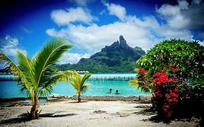 | Bora Bora | French Polynesia | Bora Bora, often referred to as the "Pearl of the Pacific," is a stunning island in French Polynesia renowned for its breathtaking turquoise lagoons, lush volcanic mountains, and luxurious overwater bungalows. A paradise for nature lovers and adventure seekers, visitors can indulge in snorkeling, diving, and exploring the vibrant coral reefs, or simply relax on pristine beaches. The island's rich Polynesian culture, coupled with its romantic ambiance and stunning sunsets, makes Bora Bora an idyllic destination for honeymooners and those seeking an unforgettable getaway. |
| 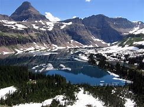 | Glacier National Park | United States of America | Glacier National Park, located in Montana, is a breathtaking wilderness known for its stunning landscapes, including towering mountains, pristine lakes, and over 700 miles of hiking trails. Visitors can explore diverse ecosystems, witness spectacular wildlife such as bears and elk, and experience the iconic Going-to-the-Sun Road, offering panoramic views of glaciers and valleys. Ideal for outdoor enthusiasts, the park provides opportunities for hiking, camping, and photography, making it a must-visit destination for nature lovers seeking adventure and tranquility in a truly magical setting |
| 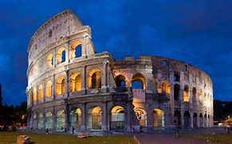 | Rome | Italy | Rome, the capital of Italy, is a vibrant city rich in history, culture, and cuisine. Renowned for its ancient landmarks such as the Colosseum, Roman Forum, and Vatican City, home to St. Peter's Basilica and the Sistine Chapel, it offers a unique blend of historical and religious significance. Strolling through its charming streets, visitors can savor delicious Italian dishes, explore bustling piazzas, and enjoy a lively atmosphere that reflects both its ancient heritage and modern life. Whether you're an art lover, a history buff, or a foodie, Rome promises an unforgettable experience. |
| Swiss Alps | Switzerland | The Swiss Alps offer breathtaking landscapes filled with majestic mountains, pristine lakes, and charming alpine villages. Ideal for outdoor enthusiasts, visitors can indulge in activities such as skiing, hiking, and mountain biking, while picturesque towns like Zermatt, Interlaken, and Jungfrau provide a glimpse into Swiss culture and hospitality. Experience the serene beauty of the Alps, enjoy world-class cuisine, and discover the rich heritage of this stunning region, making it a perfect destination for adventure seekers and relaxation alike. | |
| 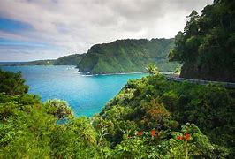 | Maui | United Staes of America | Maui, known as the "Valley Isle," is a stunning Hawaiian paradise renowned for its diverse landscapes, from lush rainforests and volcanic craters to pristine beaches and vibrant coral reefs. Visitors can explore the iconic Road to Hana, experience breathtaking sunsets at Haleakalā National Park, and enjoy world-class snorkeling at Molokini Crater. The island also offers rich cultural experiences, delicious local cuisine, and a range of outdoor activities like surfing, hiking, and whale watching, making it an ideal destination for both adventure seekers and relaxation enthusiasts. |
| 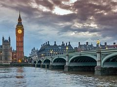 | London | England | London, the vibrant capital of England, is an iconic city that seamlessly blends history and modernity. Visitors can explore world-famous landmarks such as the Tower of London, Buckingham Palace, and the British Museum, as well as enjoy the lively atmosphere of markets like Borough Market and Camden Market. The city boasts diverse neighborhoods, each with its own unique character, from the historic charm of Covent Garden to the artistic vibe of Shoreditch. With its rich culture, numerous galleries, theaters, and a bustling culinary scene, London offers something for every traveler, making it an unforgettable destination. |
| 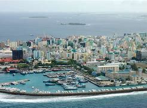 | Malé | The Maldives | The Maldives, an exquisite tropical paradise in the Indian Ocean, is renowned for its stunning white-sand beaches, crystal-clear turquoise waters, and vibrant coral reefs. With over 1,000 islands, it offers a unique blend of luxury resorts and intimate guesthouses, ideal for relaxation and adventure alike. Visitors can indulge in world-class scuba diving, snorkeling, and water sports, or simply unwind in an overwater villa. The rich marine life and breathtaking sunsets make the Maldives a dream destination for honeymooners, adventure seekers, and anyone looking to escape into nature's beauty. |
| 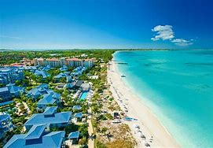 | Turks & Caicos | West Indies | Turks and Caicos, a stunning tropical paradise in the West Indies, boasts pristine white-sand beaches, crystal-clear turquoise waters, and a vibrant marine ecosystem perfect for snorkeling and diving. With its warm climate, luxurious resorts, and laid-back atmosphere, it’s an ideal destination for relaxation and adventure alike. Explore world-class coral reefs, indulge in gourmet dining featuring fresh seafood, or simply unwind on the beach. Whether you’re seeking a romantic getaway or a family vacation, Turks and Caicos offers an unforgettable escape. |
| 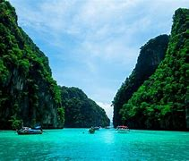 | Phuket | Thailand | Phuket, Thailand's largest island, is a tropical paradise renowned for its stunning beaches, vibrant nightlife, and rich cultural heritage. Visitors can explore the beautiful coastline dotted with activities like snorkeling, diving, and island-hopping to nearby destinations like the Phi Phi Islands. The island is also celebrated for its lively markets, delicious street food, and engaging festivals. With options ranging from luxury resorts to cozy guesthouses, Phuket caters to all types of travelers looking for both adventure and relaxation in a picturesque setting. |
| 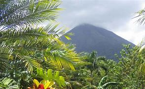 | Arenal National Park | Costa Rica | Arenal National Park, located in Costa Rica, is a breathtaking destination famous for its stunning views of the iconic Arenal Volcano, lush rainforests, and diverse wildlife. Visitors can explore numerous hiking trails, enjoy picturesque waterfalls, and experience rich biodiversity, including many bird species and monkeys. The park also offers activities like zip-lining, hot springs, and guided tours, making it an ideal spot for adventure seekers and nature lovers alike. With its dramatic landscapes and vibrant ecosystems, Arenal National Park promises an unforgettable experience in Costa Rica's natural beauty. |
| 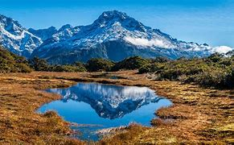 | South Island | New Zealand | Arenal National Park, located in Costa Rica, is a breathtaking destination famous for its stunning views of the iconic Arenal Volcano, lush rainforests, and diverse wildlife. Visitors can explore numerous hiking trails, enjoy picturesque waterfalls, and experience rich biodiversity, including many bird species and monkeys. The park also offers activities like zip-lining, hot springs, and guided tours, making it an ideal spot for adventure seekers and nature lovers alike. With its dramatic landscapes and vibrant ecosystems, Arenal National Park promises an unforgettable experience in Costa Rica's natural beauty. |
| 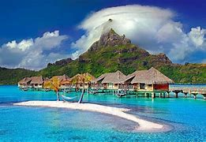 | Tahiti | French Polynesia | Tahiti, the largest island in French Polynesia, is a tropical paradise known for its stunning landscapes, crystal-clear lagoons, and rich Polynesian culture. Visitors can explore lush mountains, cascading waterfalls, and vibrant coral reefs teeming with marine life, making it a dream destination for outdoor enthusiasts and relaxation seekers alike. The island offers a unique mix of luxury resorts and traditional villages, where tourists can experience authentic cuisine, local arts, and lively cultural festivals. Whether you're looking to unwind on pristine beaches, snorkel in vibrant coral gardens, or trek through breathtaking scenery, Tahiti promises an unforgettable escape into a beautiful and welcoming world. |
| 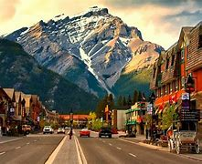 | Banff | Canada | Banff, Canada, is a stunning resort town nestled in the heart of the Canadian Rockies, renowned for its breathtaking scenery, outdoor adventures, and vibrant culture. Visitors can explore pristine lakes, majestic mountains, and an array of wildlife in Banff National Park, a UNESCO World Heritage site. The town offers a mix of luxurious accommodations, charming shops, and delicious dining options, making it an ideal destination for both nature enthusiasts and those seeking relaxation. Year-round activities include skiing, hiking, hot springs, and photography, ensuring a memorable experience for all. |
| 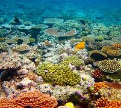 | Great Barrier Reef | Australia | The Great Barrier Reef in Australia is a breathtaking natural wonder, stretching over 2,300 kilometers along the Queensland coast. It is the world's largest coral reef system, home to an incredible diversity of marine life, including vibrant coral species, tropical fish, sea turtles, and dolphins. Tourists can enjoy a variety of activities such as snorkeling, scuba diving, and boat tours to explore the stunning underwater landscapes. With its unique ecosystems and breathtaking scenery, the Great Barrier Reef offers an unforgettable experience for nature lovers and adventure seekers alike. |
| 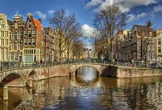 | Amsterdam | The Netherlands | Amsterdam, the vibrant capital of the Netherlands, is renowned for its picturesque canals, historic architecture, and rich cultural heritage. Visitors can explore world-class museums like the Rijksmuseum and Van Gogh Museum, stroll through the charming Jordaan district, or enjoy a bike ride along scenic pathways. The city's unique blend of history and modernity is reflected in its lively markets, diverse dining options, and the famous Red Light District, making it a fascinating destination for travelers seeking art, history, and a lively atmosphere. Don't miss the chance to savor local treats like stroopwafels and herring while taking in the stunning views of the city. |
| 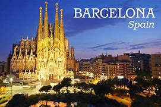 | Barcelona | Spain | Barcelona, Spain, is a vibrant city known for its unique blend of art, architecture, and culture. Famous for the stunning works of Antoni Gaudí, including the iconic Sagrada Família and Park Güell, the city offers a rich tapestry of history reflected in its Gothic Quarter. Visitors can enjoy beautiful beaches, delicious Catalan cuisine, and lively markets like La Boqueria. With a warm Mediterranean climate, a thriving nightlife, and numerous festivals, Barcelona promises an unforgettable experience for all types of travelers. |
| 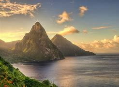 | St. Lucia | The Caribbean | St. Lucia is a stunning Caribbean island known for its lush rainforests, dramatic Pitons, and pristine beaches. This tropical paradise offers a blend of adventure and relaxation, with opportunities for hiking, snorkeling, and exploring waterfalls. Visitors can indulge in the vibrant local culture, savor delicious Creole cuisine, and unwind in luxurious resorts, making it the perfect destination for both thrill-seekers and those looking to rejuvenate in a beautiful setting. |
| 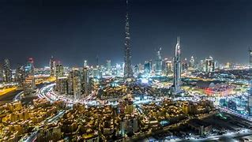 | Dubai | United Arab Emirates | Dubai, a dazzling gem in the United Arab Emirates, is renowned for its futuristic architecture, luxury shopping, and vibrant nightlife. Visitors can marvel at the iconic Burj Khalifa, indulge in diverse culinary experiences, relax on pristine beaches, or explore traditional markets like the Gold Souk. With a blend of modern attractions such as indoor skiing and aquariums alongside rich cultural experiences in historic neighborhoods, Dubai offers something for every traveler. The city's year-round sunshine and unique desert adventures, including dune bashing and camel rides, make it an exceptional destination. |
| 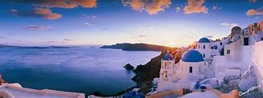 | Santorini | Greece | Santorini, a stunning island in the Aegean Sea, is renowned for its breathtaking sunsets, iconic white-washed buildings with blue domes, and crystal-clear waters. Visitors can explore charming villages like Oia and Fira, indulge in exquisite Mediterranean cuisine, and relax on unique volcanic beaches. The island's rich history, highlighted by ancient ruins and archaeological sites like Akrotiri, adds to its allure, making Santorini a perfect destination for romance, adventure, and culture. With its picturesque views and vibrant atmosphere, Santorini promises an unforgettable vacation experience. |
| 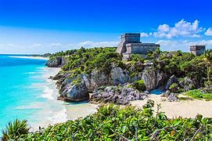 | Tulum | Mexico | Tulum, Mexico, is a stunning coastal destination renowned for its pristine beaches, ancient Mayan ruins, and vibrant eco-conscious culture. Nestled on the Caribbean coast, Tulum offers a perfect blend of relaxation and adventure, with opportunities for snorkeling in crystal-clear cenotes, exploring lush jungles, and enjoying a laid-back atmosphere in its chic beachfront resorts and bohemian boutique hotels. The town’s culinary scene is vibrant, featuring everything from traditional Mexican fare to innovative vegan options. With its breathtaking sunsets and eco-friendly vibe, Tulum is an ideal getaway for travelers seeking natural beauty and cultural richness. |
| 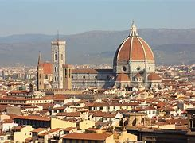 | Florence | Italy | Florence, the capital of Italy's Tuscany region, is a vibrant hub of Renaissance art and architecture, renowned for its stunning landscapes, historic landmarks, and exquisite cuisine. Visitors can explore iconic sites such as the Florence Cathedral with its remarkable dome, the Uffizi Gallery housing masterpieces by Michelangelo and Botticelli, and the stunning Ponte Vecchio bridge lined with artisan shops. The city's rich history is complemented by charming piazzas, enchanting gardens like the Boboli Gardens, and a lively atmosphere filled with local markets and traditional trattorias, making Florence a must-visit destination for any traveler seeking culture, beauty, and culinary delights. |
| 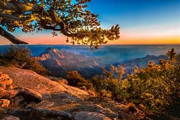 | Grand Canyon National Park | United States of America | Grand Canyon National Park is a breathtaking natural wonder located in Arizona, renowned for its immense size and stunning geological formations. Spanning over 1,900 square miles, the park features dramatic cliffs, vibrant color contrasts, and the majestic Colorado River flowing through the canyon floor. Visitors can explore a variety of hiking trails, take in panoramic views from numerous viewpoints, and learn about the area's rich Native American history and geological significance. Whether you're seeking adventure or tranquility, the Grand Canyon offers unforgettable experiences amidst its awe-inspiring landscapes. |
| 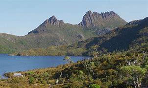 | Tasmania | Australia | Tasmania, Australia, is a stunning island state renowned for its breathtaking natural beauty, rich history, and vibrant culture. Visitors can explore pristine wilderness areas, including stunning national parks and World Heritage sites, while enjoying activities like hiking, wildlife watching, and pristine beaches. The island is also famous for its gourmet food and wine scene, artisanal products, and friendly locals. With charming towns like Hobart and Launceston, along with fascinating Aboriginal heritage, Tasmania offers a unique blend of adventure and tranquility for every traveler. |
| 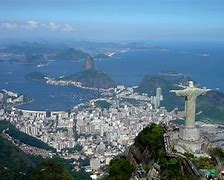 | Rio de Janeiro | Brazil | Rio de Janeiro, Brazil, is a vibrant city renowned for its stunning landscapes, lively culture, and iconic landmarks. Nestled between lush mountains and the Atlantic Ocean, visitors can explore famous attractions like the Christ the Redeemer statue, Sugarloaf Mountain, and the breathtaking Copacabana and Ipanema beaches. The city is also famous for its carnival festivities, samba music, and rich culinary scene, offering a unique blend of urban energy and natural beauty that creates an unforgettable travel experience. |
| 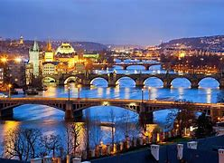 | Prague | Czech Republic | Prague, the capital of the Czech Republic, is a breathtaking city known for its stunning architecture, rich history, and vibrant culture. Visitors can explore the iconic Prague Castle, stroll across the picturesque Charles Bridge, and wander through the charming streets of the Old Town, where the famous Astronomical Clock resides. The city boasts a diverse array of museums, art galleries, and theaters, making it a hub for culture lovers. With its delightful cafes, delicious cuisine, and lively atmosphere, Prague offers an enchanting experience that seamlessly blends the old with the new. |
| 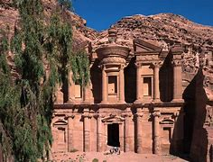 | Petra | Jordan | Petra, a UNESCO World Heritage site in Jordan, is an ancient city renowned for its stunning rock-cut architecture and sophisticated water conduit system. Carved into rose-red cliffs by the Nabataeans over 2,000 years ago, its most iconic structure, the Treasury, greets visitors at the end of a winding canyon called the Siq. Beyond the breathtaking structures, visitors can explore ancient tombs, amphitheaters, and the expansive Monastery, all set against a backdrop of beautiful desert landscapes. Petra offers a unique blend of history, archaeology, and natural beauty, making it a must-visit destination for travelers seeking adventure and cultural enrichment. |
| 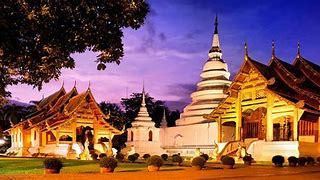 | Chiang Mai | Thailand | Chiang Mai, Thailand's cultural capital, is a captivating blend of ancient history and natural beauty, nestled in the foothills of the Himalayas. Known for its stunning temples, including the iconic Wat Phra Singh and Wat Chedi Luang, visitors can immerse themselves in the rich traditions and vibrant festivals like Yi Peng Lantern Festival. The city's charming Old Town is lined with historic architecture, bustling markets, and delicious street food, offering a culinary adventure. For outdoor enthusiasts, nearby opportunities for trekking, mountain biking, and exploring lush jungles abound, making Chiang Mai a perfect destination for travelers seeking both culture and adventure. |
| 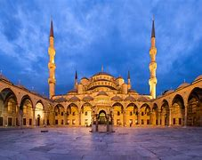 | Istanbul | Turkey | Istanbul, Turkey's vibrant capital, straddles both Europe and Asia, offering a unique blend of cultures, history, and modernity. Visitors can explore iconic landmarks like the Hagia Sophia, Blue Mosque, and Topkapi Palace, while wandering through the bustling Grand Bazaar and savoring delectable Turkish cuisine. The city's rich maritime heritage along the Bosphorus Strait provides stunning views and opportunities for scenic boat tours, making it a mesmerizing destination that captures the essence of hospitality and tradition. |
| Imagination Gone Wild | Doesn't Matter | You think it, dream it, imagine it, and we will send you there. ***Works with Wadrobes and Doors only. We are working to develop the Windows and Couches to have this feature too, so we appreciate the patience.*** |
Mon. - Fri. 9:00-5:00
Sat. 10:00-2:00
Sun. Off
© Copyright 2024 . All rights reserved.